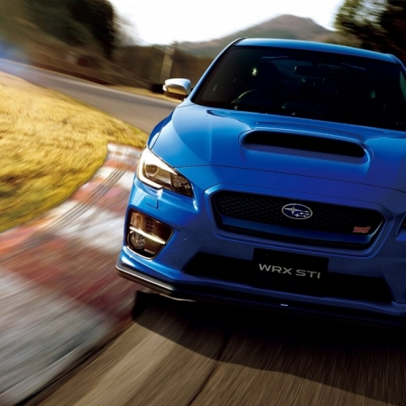

Japanese cars

Subaru — седан, универсал, купе или хетчбэк японской фирмы Subaru, выпускается с 1992 года. Impreza появилась после снятия с производства популярной модели Subaru Leone/Loyale с устаревшими двигателями серии EA. Impreza стартовала с двигателями серии EJ, которые уже стали популярными в старшей модели, Subaru Legacy[источник не указан 1267 дней]. Модель Impreza существует в пяти поколениях.
В 2000 году появилась Subaru Impreza второго поколения. Автомобиль имел версии с кузовами седан и универсал (купе исчезло из модельного ряда).
В 2007 году вышла Subaru Impreza III поколения. На автомобильном рынке России данная модель была представлена в кузове хетчбэк с моторами 1,5 и 2 литра. Но в дальнейшем исходя из маркетинговых соображений коллективом Subaru в линейку кузовов Impreza был добавлен седан. В Россию седан поставляется лишь с мотором 1,5 л.
Четвертое поколение модели Subaru Impreza выпускается в Японии с 2011 года с кузовами седан и хэтчбек. Первоначально автомобиль поставлялся на российский рынок, но из-за низкого спроса в 2014 году его продажи были прекращены.
Пятое поколение модели Impreza продается с 2016 года.
В 2010 году представлена новая модификация Subaru Impreza XV, представляющая собой модель в кузове хетчбэк с клиренсом 185 мм, двигателем EJ204 объемом 1994 см³, более толстыми стабилизаторами поперечной устойчивости, более жесткими пружинами, амортизаторами и сайлентблоками, обвесом из ударопрочного пластика и штатными багажными рейлингами. Модель Impreza XV выпускалась в 2010 и 2011 годах, затем на смену ей пришла модель Subaru XV.
На автомобилях Subaru Impreza, подготовленных британской компанией Продрайв, было выиграно три личных титула чемпиона мира по ралли: Колин Макрей победил в 1995, Ричард Бёрнс в 2001 и Петтер Сольберг в 2003 годах. Также компания Subaru с моделью Impreza трижды первенствовала в зачете производителей чемпионата мира по ралли, с 1995 по 1997 год. На различных модификациях Subaru Impreza выиграно множество этапов чемпионата мира по ралли, в последний раз на Ралли Великобритании 2005ruen года.
Уход заводской команды Subaru из чемпионата мира сказался только на классе World Rally Carruen. В зачёте серийных автомобилей (PWRC) автомобили Subaru по-прежнему продолжали активно использоваться. На них становились чемпионами в сезонах 2003-2007 и 2011 года. В том числе побеждали на этапах PWRC «Импрезы» российской подготовки, команды «Успенский Ралли Техника». Шведский пилот Патрик Флодин выигрывал этапы «серийного чемпионата мира» в 2008, 2010 и 2011 годах, становился вице-чемпионом класса в 2010 и 2011 годах.
Система обнаружения объектов позади автомобиля Subaru Rear Vehicle Detection (SRVD), используя датчики, размещённые в заднем бампере автомобиля, обращает внимание водителя на объекты в «слепых зонах» сзади, а также предупреждает о потенциальной опасности столкновения при движении задним ходом.
Несмотря на спортивный характер WRX и WRX STI, Вы будете спокойны, зная об исключительных системах безопасности Subaru. Они включают в себя усиленный каркас кольцеобразной формы и семь подушек безопасности, включая коленную подушку безопасности для водителя. При помощи мультирежимной Системы динамической стабилизации (VDC) и Системы активного распределения крутящего момента (ATV), автомобиль будет помогать Вам избегать неприятных ситуаций. Ощущение уверенности подкреплено устойчивостью и железной хваткой системы симметричного полного привода.
2007 году дебютировала третья «Импреза», причем впервые — в кузове хэтчбек, годом позже в гамме появился седан, а вот версии с кузовом универсал не было. Автомобиль стал крупнее, но технически принципиально не изменился — оппозитные четырехцилиндровые моторы, полный привод, механическая или автоматическая коробки передач. На японском рынке, как и прежде, были и переднеприводные модификации.
На «Импрезу» устанавливали бензиновые двигатели 1.5 (107 л. с.), 2.0 (148 л. с.), 2.5 (170 л. с.), а в 2009 году в Европе начали предлагать машину с двухлитровым турбодизелем мощностью 150 л. с. В Японии была еще и версия с двухлитровым бензиновым турбомотором. Версии WRX и WRX STI получили 2,5-литровый двигатель с турбонаддувом, в первом случае он развивал 230–265 л. с., а во втором — до 300 сил, причем на мелкосерийных спецверсиях были даже форсированные до 400 л. с. моторы. Впервые «заряженные» модификации «Импрезы» предлагались не только с механической, но и с автоматической коробкой передач.